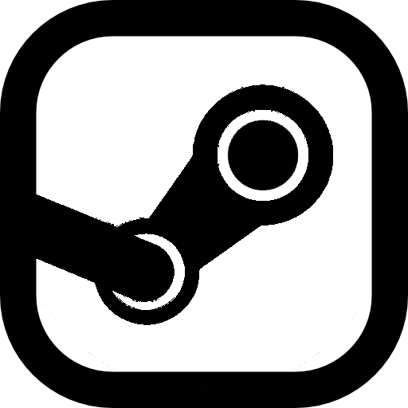
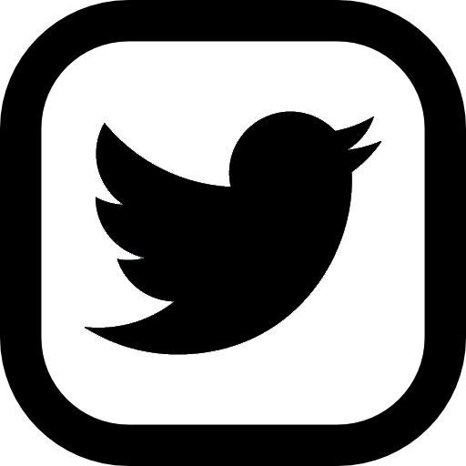

Counter-Strike: Global Offensive (CS:GO) expandirá na jogabilidade de ação baseada em equipes na qual foi pioneiro quando foi lançado há 19 anos.
CS:GO contém novos mapas, personagens e armas, além de contar com versões atualizadas de conteúdos do CS clássico (como de_dust etc.).
"O Counter-Strike surpreendeu a indústria de jogos quando o mod improvável se tornou o jogo de ação de PC mais jogado no mundo quase imediatamente após o seu lançamento, em agosto de 1999. Durante os últimos anos, continuou a ser um dos jogos mais jogados do mundo, foi o jogo principal de inúmeros torneios competitivos e vendeu mais de 25 milhões de cópias no mundo inteiro. O CS:GO promete expandir a jogabilidade popular do jogo e trazê-la não só para o PC, mas também para os consoles de última geração e para Macs", disse Doug Lombardi, da Valve.
Os Counter-Strike: Global Offensive Major Championships, mais conhecidos por Majors, são torneios de esports de Counter-Strike: Global Offensive (CS:GO) patrocinados pela Valve, a produtora do jogo. Os Majors foram introduzidos em 2013, num torneio realizado em Jönköping, Suécia, promovido pela DreamHack e com uma premiação de US$250,000. Seis equipas foram diretamente convidadas, seis equipas foram convidadas devido aos bons resultados nos torneios anteriores, e as restantes quatro equipas vieram pelo qualificador.
Desde aí, o circuito dos Majors expandiu-se significativamente, tendo agora US$1,000,000 de premiação e 24 equipas de todo o mundo. Os Majors são considerados os mais importantes e prestigiantes torneios no cenário do Global Offensive.
O projeto The Last Dance, após três meses de expectativa, foi finalmente oficializado no dia 18 de fevereiro. A equipe brasileira de Counter-Strike: Global Offensive (CS:GO) vestirá a camisa da Imperial Esports e contará com Gabriel "FalleN" Toledo, Fernando "fer" Alvarenga, Lincoln "fnx" Lau, Ricardo "boltz" Prass, Vinicius "VINI" Figueiredo e Luis "Peacemaker" Tadeu no elenco. Como já era de se esperar, o retorno do núcleo bicampeão do Major chamou a atenção, com o anúncio na Twitch ultrapassando 820 mil visualizações totais. Além disso, a venda de camisetas do novo time bateu recorde.
O nome da iniciativa é uma referência ao documentário "The Last Dance", que conta a história de Michael Jordan em sua última temporada pelo Chicago Bulls. A despedida do astro norte-americano serviu de inspiração para que FalleN reunisse amigos do passado em um quinteto 100% brasileiro. Isso porque, segundo o próprio, essa poderia ser a sua última temporada como jogador profissional de Counter-Strike.